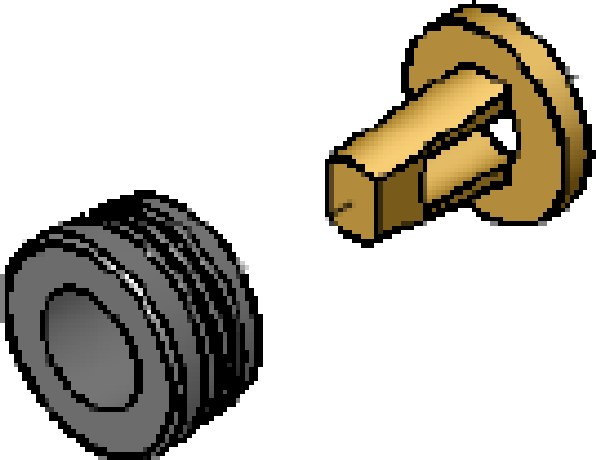
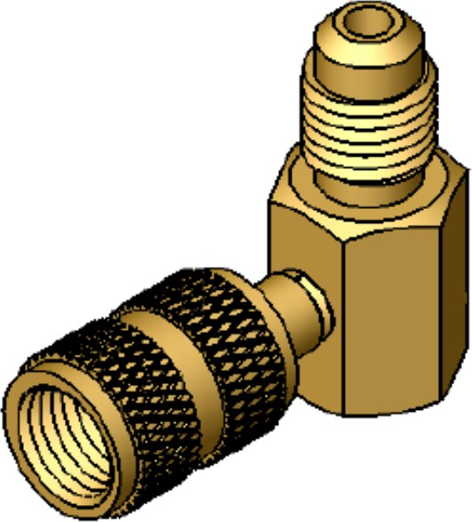

Doc no. MOC-TSB-13-01 // Vol. 13 No. 01 // Feb 18, 2013 // Equipment
Seal Replacement Kit
New7201972088
MOC now has a seal replacement kit available for the 90° Schrader Adapter (Part No. 72019). This Kit (Part No. 72088), which includes the Seal and the Actuator Pin, is now available for purchase.
What's new
Contact
For more information, contact the Machine & Equipment Department at 866.244.6621.


Part numbers
| Part No. | Description | Notes |
|---|---|---|
| 72088 | Kit, Seal Replacement | |
| 72019 | Adapter, 90° Schrader MOC |